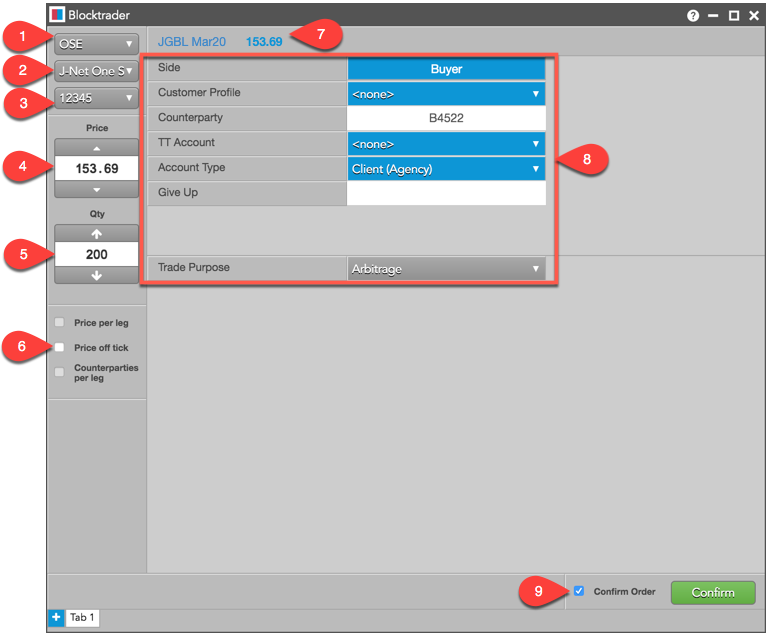
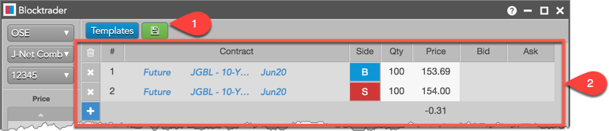
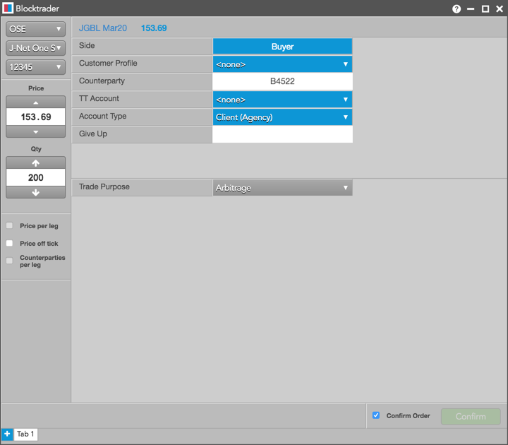
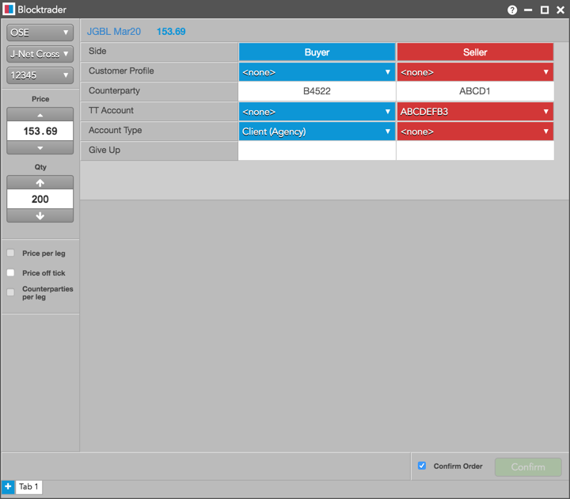
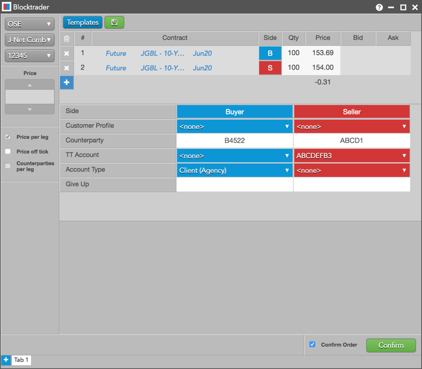

The TT® platform supports J-NET Trading on OSE. Using the Blocktrader widget on TT, you can submit the following orders:
- J-Net One Sided: Orders that are only posted to the
participant listed as the counterparty. J-Net One Sided
orders are only executed after the counterparty submits a matching
J-NET One Sided order.
- J-Net Cross: Orders where the bid-side participant and
an ask-side participant are set within the same order message.
Both sides of the order are then executed as a Cross order.
- J-NET Combo: Orders with multiple options and futures instruments that can be executed at the same time, and where the bid-side participant and an ask-side participant are set within the same order message.
Matching a J-Net One Sided trade
J-NET One Sided orders are only executed after both traders submit a matching J-NET
One Sided order. To match these trades, OSE requires the following:
- The orders must have the same trade type, instrument, price, and quantity.
- Both sides of the trade (Buy and Sell) must be set.
- Both participants must set each other as their counterparty.
Blocktrader display for OSE
The Blocktrader widget consists of the following components needed for submitting J-Net trades on OSE.

The components are:
- Exchange selector — Lists the exchanges with OTC trade reporting supported on TT.
- Trade Type selector — Lists the OTC trade types supported for the selected exchange. For OSE, this value maps to transaction_type in the exchange API.
- Account selector — Sets the account used to route the trade to the exchange.
- Price — Sets the price for One Sided or Cross trades. You can also use the up and down arrows to set the price. This field is grayed out for Combo trades.
- Quantity — The total trade quantity. Shown only for One-Sided and Cross trades.
- Price off tick — When checked, allows you to enter an off tick price per leg for instruments that support tick sizes smaller than what is displayed.
- Instrument Picker — Allows you to search for and select the instrument being traded.
- OSE J-Net Trade fields — Allows you to complete the fields required by the exchange. Fields are displayed based on the selected trade type.
- Confirm Order and Submit — Allows you to confirm the order before submitting. When Confirm Order is checked, clicking confirm will allow the user to check the details of the trade before clicking Submit.
Blocktrader display for J-Net Combo trades
The widget displays the following additional components for Combo trades:

The components are:
- Templates — Displayed for J-Net Combo trades. Allows you to select a structure template to configure and submit multi-leg strategy transactions. Click the "Save" button to save your custom strategy as a template.
- Leg definition grid and instrument picker — Instrument picker allows you to search for and select the instrument being traded. Individual instruments or multi-leg instruments can be selected based on the trade type, and you can set a price and quantity for each leg. For multi-leg strategies, the grid displays the net sum of the best Bid and Ask prices for each leg of the transaction. Click "+" to add a leg or X" to remove a leg as needed.
Common J-NET Trade fields for OSE
The following list shows the Blocktrader fields that are common when submitting J-Net trades on OSE.
- Side — Sets the Buyer or Seller. Click the Buyer or Seller cell to set each side of the trade.
- Customer Profile — A drop-down list of available Order Profiles. This is an optional field. Only customers with Order Profiles defined in Setup appear in the Customer Profile list.
- Counterparty — Sets the counterparty participant code and is mandatory for all J-Net One Sided, Cross, and Combo trades. Maps to ex_customer_s in the exchange API. This is a required field.
- TT Account — Sets an optional account for the Buyer or Seller. This account will be used for the Buyer or Seller instead of the one set in the Account Selector. All accounts assigned to the user are listed in the drop-down menu. Maps to client_info_s in the exchange API. Note: The exchange does not allow the * and % characters to be used as part of the account number.
- Account Type — Sets the exchange account code for the trade. Maps to exchange_info_s in the exchange API as "0" = Client, "9" = House. Valid values are:
- Client (Agency)
- House (Principal)
- none
- Give Up — Identifies which counterparty the Give-up order is allocated to. Enter the carrying participant code. Maps to exchange_info_s in the exchange API.
- Trade Purpose — Sets the intention of the J-NET One Sided trade. Refer to the exchange’s documentation for the requirements for reporting the trade purpose. This is a required field for one sided trades. Select one of the following:
- Arbitrage
- Combination
- Cross Trade: Select "Cross Trade" to enter a J-NET One Sided Cross. This
will require the counterparty to submit a matching trade. To enter a two sided J-NET Cross, select "J-NET Cross" in the Trade Type selector and enter credentials for both the Buy and Sell sides of the trade.
- Exchange for Physical
- Position Consolidation
- Rollover
- Other
Submitting J-Net trades on OSE
Note: Prior
to submitting a J-NET trade, you should know the counterparty’s
participant code and the trade purpose (e.g., Arbitrage, Combination,
etc).
To submit a J-Net trade on OSE:
- Open the Blocktrader widget and select OSE from the Exchange selector.
- Select a trade type from the Trade Type selector:
- J-Net One Sided
- J-Net Cross
- J-Net Combo
- Find and select an instrument using the Instrument Picker at the top of the widget.
- Set the quantity and price for the trade.
- Select an account from the account selector.
- Complete the common and required fields in Blocktrader.
Additional fields in Blocktrader vary depending on the type of J-Net trade you select:
- J-Net One Sided
Enter the common fields, select a side, and enter the counterparty. You must verify that the counterparty
enters a matching J-NET One Sided trade.
- J-Net Cross
Enter the common fields and counterparty participant codes, and submit both sides of the trade.
- J-Net Combo
Enter the common fields and counterparty participant codes, configure each leg of the transaction, and submit both sides of the trade.
- Click the Submit button.
If Confirm order is checked, confirm the order before submitting it to the exchange.
Example: OSE J-Net One Sided Trade
The following figure shows a J-Net One Sided trade in Blocktrader.

Example: OSE J-Net Cross
The following figure shows a J-Net Cross trade in Blocktrader.

Example: OSE J-Net Combo
The following figure shows a J-Net Combo trade in Blocktrader.
